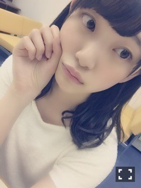

2016/0515Sun歩く時つまさきに重
こんにちは！
堀未央奈です
先日、じょしらくチームくの
ゲネプロを観に行ってきました。
本当に面白くて椅子を揺らしながら
大笑いしました！
観ていて色んな刺激もいただき
考えることができました。
私は映像のお芝居をやってみたいと
ずっと思っているけれど、舞台のお芝居は
映像とまた違った難しさがあるのかなと
客観的に見ることによって改めて
気づきました。
ちはるさんもれいかさんも琴子もみり愛も
井上さんも1人1人が個性豊かで
本当に、楽しかった〜
みり愛が本当に可愛いの。
本番前と本番後に未央奈〜って
抱きついてくるんだもん。
"守ってあげたい"とはこの事か(p_-)
何らかの形でまた新たな作品作りに
挑戦してみたくなりました。
自分で幅を狭めずに色んな事に
挑戦していく勇気が
今の私には必要かなと気づきました。
今のやるべきことは、夏の全国ツアー。
去年のライブの目標は
その前の年のライブの自分を
超えることだったので今年は更に
成長した姿や"色んな堀未央奈"を
見てもらえるように頑張りたいと思います
あとはライブ中に沢山の方と
コミュニケーションを取ったりしたい♪
暑さに負けず頑張るぞ〜✨

明日のNOGIBINGO!6は
猫企画 ฅ ̳• ·̫ • ̳ฅ
みてにゃ〜〜
あとお休みの日に
ずっと前から約束していて
やっと湯本亜美ちゃんと卒業旅行に
行けました！イースターの時期の
ディズニーは初めてでした♪
ぴょん
同じクラスで仲良くしてもらってて
亜美はおっとりマイペースで
優しくて真面目で天然で
一緒にいて落ち着くんです。
ヒノキ花粉の事、エノキ花粉って
言っていました笑
チュロスはシナモン味が
好きヽ(*・ω・*)ﾉ
卵料理好きだから、イースターに
わくわくしました！
また行きたいなぁ
発売中⇩
○「バイオハザードぴあ」
○「別冊カドカワ」
○「読売中高生新聞」
○「AKB新聞」
○「EX大衆」
○「BRODY」渡辺麻友さんと
私の両面ポスター付き
○「FLASHスペシャルGW号」
○「スポーツニッポン」
○「TVガイド」
○5/18「anan」
○6/10「MARQEE」
TV、ラジオ
○毎週日曜日 18:00〜
乃木坂の「の」
○毎週日曜日 24:00〜
乃木坂工事中
○毎週月曜日
NOGIBINGO!6
今日は18時から乃木のので
2期生曲初解禁です！！！
乃木坂工事中も見てね
部活動、頑張りますっ
えいやー
ではでは♪
2016/05/15 08:30


コメント(444)
コメント遅れた
握手会楽しむよ
SONYでした
みおなぴょんかわいい、うさぎ〜
未央奈の目標が達成出来るようにこちらも全力で応援させて貰います。全国ツアー楽しみにしています。ディズニーいいな(^o^)俺も行きたい
いつもむちゃくちゃ可愛いですね♪
笑顔の未央奈さんは、やっぱり素敵です。
舞台とか凄い見てみたいです。
未央奈さんの話を聞いて、さらに興味が湧きました！
感動する舞台もいいけど、笑顔になれる舞台もいいですね！
またブログ更新されるのを楽しみに待ってます。
2期生曲、楽しみにしてるよ。
朝の更新は珍しいですね。気づきませんでした…
最近、未央奈の影響もあってか、映画をみたくて堪らないんです！
テストがおわったら沢山見よう！
いつか、未央奈の出てるドラマや映画も見てみたい！
色んな堀未央奈を見せてください！
頑張れ！応援してます！
ディズニーランド！いいなぁー！！
昔は年に数回行ってましたけど、引っ越しちゃってからはめっきり…
久しぶりに行ってみたいな！
今日は握手会でしたね。
名古屋の時しかいけないので、次の機会はまだまだ遠そうです…
待ち遠しい！(笑)
そんなこんなで。またコメントします！！
ブログ更新ありがとう〜
乃木中楽しみ〜〜
今日は握手会やったんやね〜
いつも名古屋しか行けんから次は遠征してみようかな笑
ディズニーええな〜
うさぎとか可愛すぎて反則やわ‼︎笑
全国ツアー行けることになったから、めっちゃ楽しみにしとるで‼︎
じょしらくいいなぁ見に行きたいよ〜
めちゃくちゃ面白いだろうよね。
みり愛可愛すぎかよ(*´艸`)
全ツみんなで楽しもうね！はやくライブ行きたい。去年の未央奈を超えましょう！『色んな堀未央奈』良き表現ですね。見たいです(￣∇￣)
未央奈近くに来たら『未央奈ーーーー』って叫ぶね！(-ω-)笑
ディズニーなんて久しく行ってないな、楽しかったですか？卵料理はいくたそに任せましょう(￣∇￣)
乃木のの楽しかったー『かき氷の片想い』とても好きです。やっぱり生で見たいよね。
乃木中楽しみね(＊¯艸¯)
NOGIBINGOみるにゃ〜〜〜
おし(*´﹃｀*)まい
３部→モバメ１周年記念の話。。
４部→バイオハザード公開するねって話。。以上！
ちなみに堀ちゃんと同じチームく見てきたよ！！
めっちゃ楽しかった(^ ^)
服がオレンジ✖️白の組み合わせだったけど覚えてる？笑
ちなみに5部の1番最初だったよ！！
最後の釣り顔やばくて釣られたわ笑
5月29日と6月4日の個別も行くから覚えてたらまきかんって呼んでほしいな笑
今日は本当に楽しかったよありがと！！
またコメントするね✨✨✨
堀さんの雰囲気が最近変わった様に思います。
大人っぽくなったとゆうか…。
これからの活動注目してます。
じゃあね。
ラジオ、聴いたのですが、
ブログを読んだ後、内容がすっ飛んでしまった。
うっ、哀しい。
ラテンっぽいナンバーが流れていたような...。
必要ならやった方がいいかもしれませんね。
それが何か、私には分からないけど。
チェロスって、どういった味の品物なんですか。
今日はありがとう（＾ω＾）
あっちゃんて呼んでくれて嬉しかった！
今度は名札持って行くね♡
次は７月の横浜の握手会(*^_^*)
早く会いたいなー！
久しぶりに話せて楽しかった！
るんるん
ゆっくり休んでね(^O^)
メガネ未央奈見たかったなー
またいつかかけてきて！
その時は会いに行くで、たぶん笑
ディズニーね、めっちゃ詳しいひとと一緒に行くとさらにさらにたのしくなるよーー
おすすめー！！
ディズニーいいなぁぁっ！まぁ１０日にシー行ったんだけどね笑笑 シーは１５周年で楽しかったけどランドもイースター楽しそうだね！
真夏の全国ツアー行きますよー！昨年よりもパワーアップしているみおなを早くみたいです笑
さあ！今日はゆっくりやすんで明日からも頑張ってください！応援します
Ｂｙ たっちゃん
「色んな堀未央奈」楽しみにしてるよ！
ディズニーいいなぁ～
やっぱり人多かったかな？
ではでは。
みおな大大大好き
訳ではなくて、経験積んだひさの方がわかったり
する事もあるから、信頼出来るひさの言う通りにした方が良い場合も多々あると思います(＾ｰ^)ノ
ライブとか握手会行きたいです～～
多分一生無理な気がします(´；ω；｀)
北海道に住んでて学生なので...
でも諦めないで。望んでますね(>_<)
卒業旅行いいですねー！
ゆあみ久しぶりの見た～～
仲いいんですね(*⌒▽⌒*)
無理せず、堀ちゃんのペースで頑張って下さい。
私も頑張らなければ^^;
卒業旅行できて良かったですね(^^)
＞未央奈！＜
￣Y^Y^Y^￣
_n
( ｜ ハ_ハ
＼＼ ( ‘-^ )
＼￣￣ )
７ /
＿人人人人人人人人人人人人人人人人＿
＞今度ジブリのモノマネしに行くで！＜
￣Y^Y^Y^Y^Y^Y^Y^Y^Y^Y^Y^Y^Y^Y^Y￣
ハ_ハ
（ ‘-^ ) n
￣ ＼ ( E)
７ /＼ヽ/ /
イースターのディズニーはいつもよりも
可愛いよね～✩✩✩あとハロウィンも！！
うさ耳似合ってる～(｡^ω^｡)♪♪
未央奈の猫ポーズかわいいッ
早く未央奈に会いたいな～！！
全ツ仙台２日目昼と次のシングル
まで待ってられな～いッ
全ツのとき未央奈タオルと未央奈うちわ
買わねば～！！
またブログ更新してね～！
握手会おつかれさま～！
ばいばーい☆
堀さんがうさ耳を装着すると破壊力がすさまじいですね。
ゲネプロという言葉を初めて知ることが出来ました。業界用語でしかも日本独自の造語だったんですね、勉強になりました。
握手会お疲れさま！いやはや、本当に。
ラジオ「の」も聞いたよ！今回は、わりとざっくりした感じの回で、それはそれで面白かったな
僕もチーム「く」も観て、たいへん素晴らしいと思ったよ。チームによって（当たり前だけど）雰囲気が違って、それぞれに良さ（上手い下手じゃなくてね）があるものだな、と実感し、勉強になりました
ところで、ライブでの話を書かれているけれど、確かに作品であることには何ら変わりはなく、アイドルの本分なわけだから、ぜひ頑張っていいものにしてね！！
夏のライブでは、もちろんサイリウムは堀ちゃんカラーで振るね 三日間だから、たぶん喉がガラガラになるな、笑
にしても、堀ちゃんのうさ耳、かわいいね！！
似合いすぎてて元から生えてたんじゃないかと思うレベルや…！
色んな堀未央奈を見れるの楽しみにしてるけど大きな軸としての堀未央奈は変わらないように心掛けておいてね(^^)
やっぱり未央奈は未央奈らしいのが１番魅力的だからね(≧▽≦)
香川のいっちー改めグミ♪
今日結構暑かった… 夏が近づいている感じがしてきたね〜
乃木中観るよ！
みり愛もカワイイよねー
可愛すぎるよ！うさみみ
1集albumで'面白く'いる曲があり、
今回の2集albumのタイトルから'面白く'おり、
曲また様々な'面白く'があると思います。
もしかしたら、
このような'面白く'いる曲が乃木坂46の魅力がないかと思います。
.
.
.
今週の工事中の部活動とNOGIBINGO!6の猫企画は
必ず見なければならない放送だと思うよ。
.
.
.
あ！
復活祭のウサギが卵を伝えてくれたように、
みおなウサギが、世界中の人々に幸せを伝えてくれていますね。
今夏、"色んな堀未央奈"を応援し、期待しているよ~
体調には気をつけて～
うさみみ似合いすぎ！
はぁ、かわいい∩^ω^∩
あわてん坊のお月様が見えた今日この頃
心細い時に優しくしてくれると嬉しいもんね
とっても楽しかった（≧∇≦）
かき氷の片想い、最初のソロよかったよ！
堀ちゃんの声も大好き！
夏の全国ツアーの静岡まで1カ月！ なんか早いね〜 まいまいの卒業コンサートってこともあって力が入ると思います！ 暑さに負けるな！！！
サンクエトワールですのポーズやってくれてありがとう
今日も可愛かったです。最高でした。
神宮ではサンクエトワールみれるかなー？
みれるよねー楽しみ(*^o^*)
コメントする